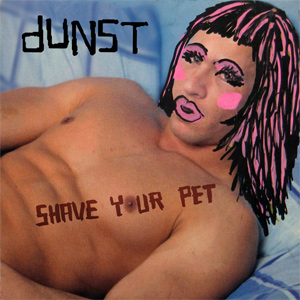

"Shave Your Pet" - Second dunst compilation

Dennis Agerblad
contributes with 2 songs.
1. - feat. Knud Vesterskov - The Man With The Needle
13. - mAdam feat. Dennis Agerblad - La la la
Released by:
Tunga musiK